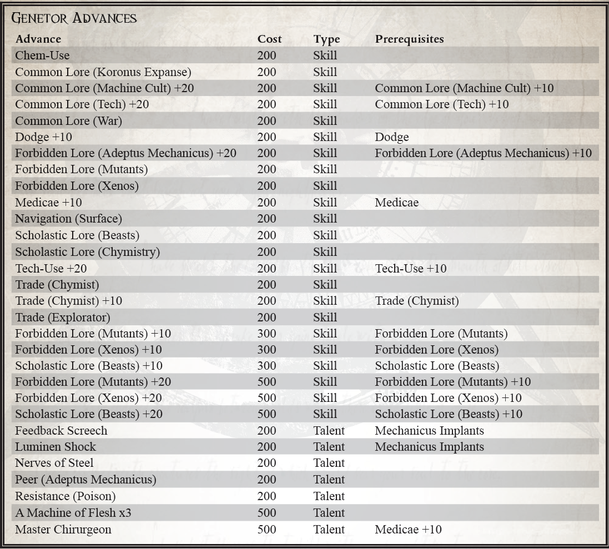

“主题物种“兽人”，身高为218.6cm，比观察到的平均值高25.56cm。质量为 163.15 公斤，主要由致密的骨骼结构和肌肉组织组成，比观察到的平均值高 31.4%。与人类标准相比，表皮层较厚且缺乏神经末梢。疼痛反应……比预期的要少，表现出对不适的极端耐受性。之前的测试已经唤醒了对象，它现在试图释放自己。肌肉松弛剂用于减少破坏性运动，人体标准剂量的 460%——对化学影响的耐受性相当大。准备打开胸腔……”
——Genetor Aurelius Thoze，Adeptus Mechanicus Xenobiologist。
遗传学家是研究遗传和生物学问题的学者。有时被称为 Magos Biologis，Genetors 与机械修会的 Logis、Artisan 和 Magos 等级并列，作为其统治祭司，拥有远远超出初级工程师和 Lexmechanics 的知识和资源。 Genetor 的研究领域使他与大多数技术牧师不同，他们对有机生命的职业痴迷常常使他们对他们更倾向于机械的弟兄们感到陌生。
在大多数情况下，Genetors 与其他 Tech-Priests 几乎没有什么不同——他们拥有相同的植入方式，将信息和理解视为神性的体现，并以几乎相同的方式参与对知识的追求。不同之处在于，他们不会很快将血肉判断为不如钢铁和血浆，而是将生物视为极其复杂和适应性强的机器。有些人满足于遥远地进行这种观察，而另一些人则接受它，寻求改善他们的形式，而不是用钢铁，而是用更好的肉和更好的血。对一个不知情的观察者来说，一个 Genetor 在裹着长袍时可能看起来与任何其他 Tech-Priest 没什么不同。然而，在大多数技术牧师的质量来自钢筋和植入装甲板的情况下，Genetor 可能已经用大桶肌肉、坚韧的皮肤和有机加固的骨头来增强自己。
他们对有机物的兴趣不仅限于他们自己的形式，甚至是人类的形式。外星遗传学研究，以了解它们如何发挥作用以便更好地杀死它们，是基因学的一个常见研究领域，这个子派别统称为外星生物学家。这种知识是危险的，许多 Genetor 被谴责为异端，因为他们声称特定异形的生物学优于人类。无论如何，Genetor，尤其是异种生物学家的存在，被探索舰队和流氓商人视为一种资产，因为他们对人类和非人类形式的了解使他们能够辨别新遇到的异种或土著物种的性质，或者对在遥远世界发现的一种新的亚人类进行分类。
在卡利西斯星区，Genetors 有着特别辉煌的历史——大量外星生物学家加入了安茹十字军，研究该地区的外星人，因为他们的领地被帝国的力量摧毁。从那时起，他们一直是车床内外机械教政治中一个值得注意但经常被忽视的因素，他们聚集了大量加入科罗努斯广域的探险队，试图成为第一个遇到新生命并进行剖析的人和分析。
卡利西斯星区的基因中存在三种不同的哲学。第一个也是最古老的是Primus Humanum，它拥护人类形态的纯洁性作为知识的容器，将帝皇的形态视为理想的人类形态和完美的知识载体形态。车床基因中的第二位也是目前最占主导地位的统称为 Apexists，他们相信逆境会在有机体中孕育力量，完美的有机体是战胜所有竞争对手和挑战的有机体；哲学本身是对古代前帝国学者著作的改编。第三种哲学目前在更广泛旅行的基因中受到青睐，并在更传统的基因中引起关注，它受到沃格尔同伴的拥护，其领袖海德里希沃格尔从长达一个世纪的远征科罗诺斯广域返回并开始宣扬一个强制基因和生物增强的信条，以加强人类应对未来的麻烦。一些人认为，沃格尔的意识形态近乎异端，其暗示人类在当前状态下不知何故不足，被许多人视为本身就是一种亵渎。
Genetor 和更传统的 Tech-Priest 之间的区别在于培训、能力和专注度之一。就像在机械修会中经常出现的情况一样，理解产生力量，而力量又产生知识，只有那些拥有理解知识的意志和智慧的人才能在他们的同类中适当地获得任何形式的地位。
成为 Genetor 需要特殊且不寻常的性格；倾向于将有机生命本身视为一种机器，而不是许多技术牧师所认为的脆弱的肉质外壳。然而，除此之外，探索者主要需要奉献精神和研究才能成为基因，利用他对有机科学的知识来帮助探索帝国以外的领域。
所需职业：探险家
替代等级：等级 3 或更高 (10,000 xp)
其他要求：探索者必须具有35或更高的韧性，40的智力
或更高，并拥有Autosanguine和Prosanguine天赋。
肉体机器（天赋）
天赋组：蛮力、利爪/尖牙、无痛感、多臂、夜行者、再生、声纳感知、坚固、坚韧的皮、剧毒、有翼的肉体对你来说不是弱点，而是一种尚未开发的潜力 . 锁定在你的基因和组织中的是更强大力量的秘密，尽管你不回避钢铁的纯度和现有的植入物，但你只将它们视为你可以改善自己的机制的一部分。 你获得以下突变之一：蛮力、利爪/尖牙、无痛感、夜行者、硬皮或剧毒，或以下特性之一：再生、声纳感知或坚固。 您获得了该特征或突变的影响（尽管，当您将生物系统移植到您的身体中或操纵您自己的遗传结构时，您是否实际上是一个突变体是有争议的）。
